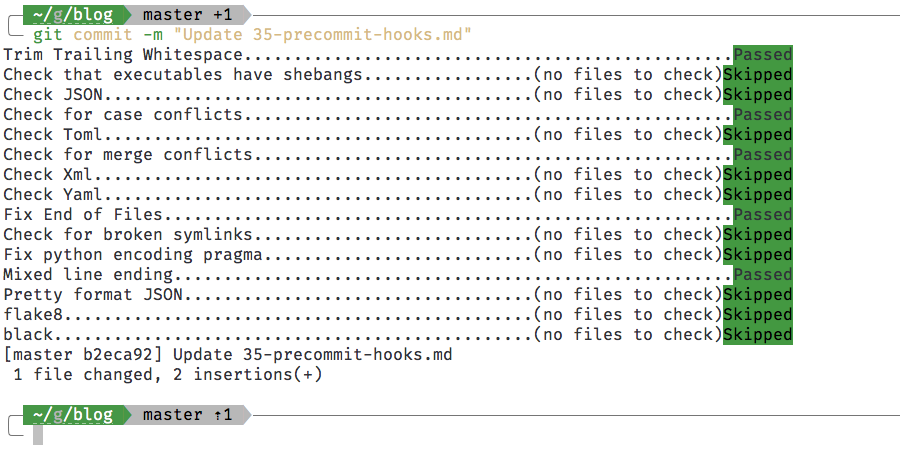

Using pre-commit hooks
git, python, pre-commit, pre-commit hooks

git commit with pre-commit hooksSetting up pre-commit for a git repo
You can run scripts before creating a commit in a git repo, i.e. pre-commit hooks, to verify that the files you are checking in meet a predefined standard. pre-commit is a Python package that let’s you manage and run pre-commit hooks in any git repository.

black and flake8 [1]Using pre-commit requires adding a .pre-commit-config.yaml file to the git repository, and running pre-commit install.
Add a file called
.pre-commit-config.yamlto the root of your git repository, and add the hooks you want in that file. This is an example of a.pre-commit-config.yamlfile:# cat /path/to/gitrepos/reponame/.pre-commit-hooks.yaml repos: - repo: https://github.com/pre-commit/pre-commit-hooks rev: v3.1.0 hooks: - id: trailing-whitespace - id: check-executables-have-shebangs - id: check-json - id: check-case-conflict - id: check-toml - id: check-merge-conflict - id: check-xml - id: check-yaml - id: end-of-file-fixer - id: check-symlinks - id: fix-encoding-pragma - id: mixed-line-ending - id: pretty-format-json args: [--autofix] - repo: https://gitlab.com/pycqa/flake8 rev: 3.8.3 hooks: - id: flake8 args: [ '--max-line-length=150', '--ignore=E203,E402,E501,E800,W503,W391,E261', '--select=B,C,E,F,W,T4,B9' ] - repo: https://github.com/ambv/black rev: 19.10b0 hooks: - id: black args: [--line-length=150, --safe]Install
pre-commitand runpre-commit install.pip install pre-commit pre-commit install
Using setup.py to install pre-commit hooks
You can have setup.py automatically run precommit install when setting up a developer environment.
To do this, add a PostDevelopCommand hook to setup.py. Here’s a minimal example:
import os
import logging
from codecs import open
from setuptools import setup, find_packages
from setuptools.command.develop import develop
from subprocess import check_call
import shlex
# Create post develop command class for hooking into the python setup process
# This command will run after dependencies are installed
class PostDevelopCommand(develop):
def run(self):
try:
check_call(shlex.split("pre-commit install"))
except Exception as e:
logger.warning("Unable to run 'pre-commit install'")
develop.run(self)
install_requires = ["networkx"] # alternatively, read from `requirements.txt`
extra_requires = ["pandas"] # optional dependencies
test_requires = ["pytest"] # test dependencies
dev_requires = ["pre-commit"] # dev dependencies
setup(
name="packagename",
version="v0.1.0",
install_requires=install_requires,
extras_require={
"test": test_requires,
"extra": extra_requires,
"dev": test_requires + extra_requires + dev_requires,
},
cmdclass={"develop": PostDevelopCommand},
)Then, during the first time you want to start working on the project you can run the following to setup your development environment:
pip install -e ".[dev]"This will install install_requires, test_requires, extra_requires and dev_requires dependencies. This will also run pre-commit install in the git repository, which will add the hooks from the .pre-commit-config.yaml file.
If you don’t want to automatically run pre-commit install, remove the cmdclass={"develop": PostDevelopCommand} line in the setup(...) function arguments.
Using pre-commit-hooks for all git repos
If you want to use pre-commit-hooks for all git repositories on your machine, you can set up a git-templates folder that is used as a templatedir when you run git init.
Add the following to your ~/.gitconfig file 1.
1 On Windows, the file is located at C:\Users\USERNAME\.gitconfig. Also, git will not create this file unless you ask for it. You can create it by running git config --global --edit.
[init]
templatedir = ~/gitrepos/git-templatesNow create a ~/gitrepos/dotfiles/git-templates folder with a single folder inside it called hooks, and with a single executable file inside the hooks folder called pre-commit.
tree git-templatesgit-templates
└── hooks
├── commit-msg
└── pre-commitYou can create a text file and make it executable by running chmod +x pre-commit. In that file, you can make pre-commit point to a .pre-commit-config.yaml file of your choosing.
This will make git init use the templatedir as a template when you create a new git repository.
Here is what my git-templates/hooks/pre-commit file looks like:
#!/bin/sh
pre-commit run --config ~/gitrepos/dotfiles/.pre-commit-config.yamlYou can place the .pre-commit-config.yaml wherever you like. I have mine in my ~/gitrepos/dotfiles repository. If you have set it up correctly, the next time you run git init the pre-commit hooks will be set up in your git repository based on the .pre-commit-config.yaml file you set up.
git commit --no-verify
Finally, if you want to bypass the pre-commit hooks in special circumstances, you can add the --no-verify flag to your git commit command.
git commit --no-verifyThis will run git commit without any pre-commit hooks.
Troubleshooting
You can update the .git/hooks/pre-commit file if something goes wrong, to suit your configuration. For example, you may have to configure it to point to a specific version of Python on your machine if it doesn’t point to the correct version by default.
You also can change the flake8 errors and warnings that you’d like to ignore by changing the arguments to flake8. You can read about all the different flake8 errors and warning over here: https://www.flake8rules.com/.
References
Reuse
Citation
@online{krishnamurthy2020,
author = {Krishnamurthy, Dheepak},
title = {Using `Pre-Commit` Hooks},
date = {2020-07-27},
url = {https://kdheepak.com/blog/using-precommit-hooks/},
langid = {en}
}